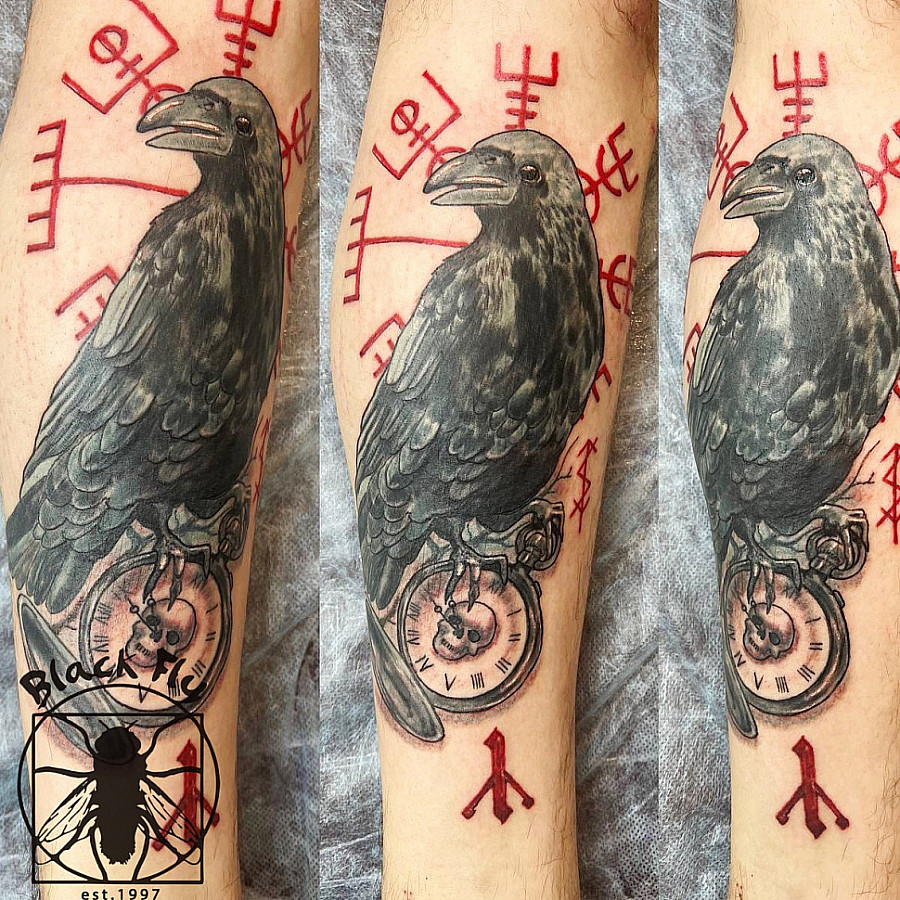
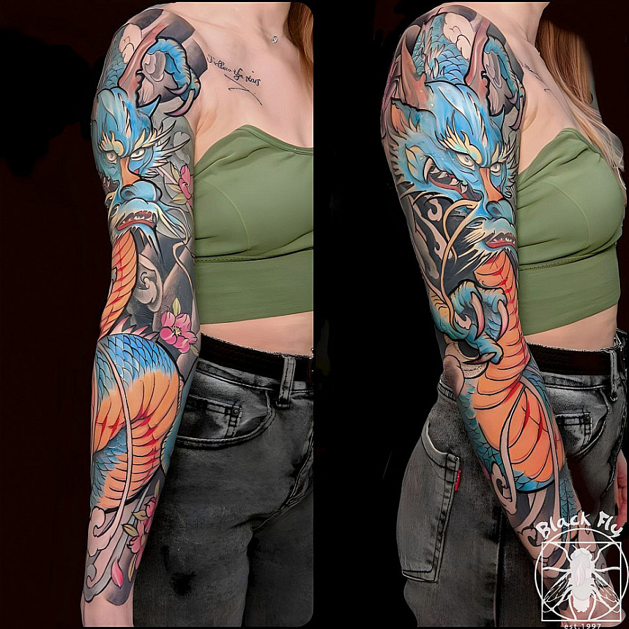
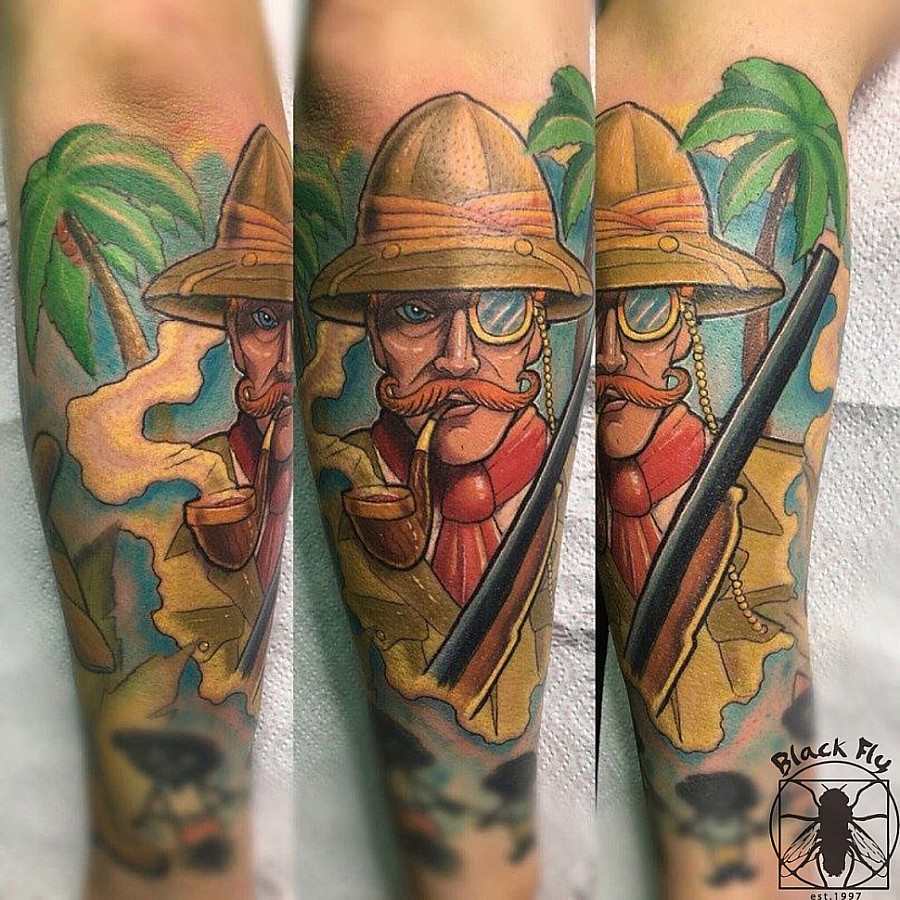
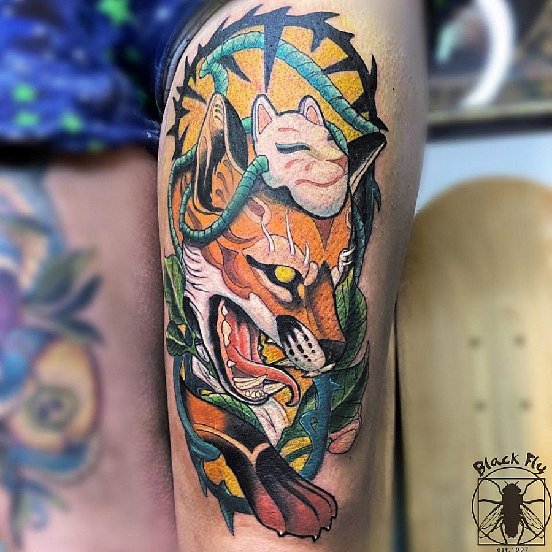
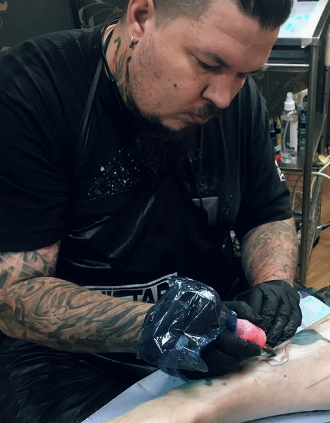

Black Fly
Тату-салон и пирсинг-студия на Никольской улице в самом сердце Москвы. Профессиональные мастера, качественные расходные материалы и магазин украшений.

О салоне
Black Fly — тату-салон и пирсинг-студия на Никольской улице, в самом центре Москвы у метро Лубянка. Студия объединяет профессионалов, стремящихся ко всему неординарному.
Мастера студии помогают раскрыть грани личности через татуировки и пирсинг. Black Fly также предлагает магазин украшений для пирсинга, удаление тату и перманентный макияж.
Реальное портфолио



Мастера Black Fly

Стили и услуги
Стили работ
Услуги
- Художественная татуировка
- Перекрытие старых тату
- Пирсинг
- Удаление тату
- Перманентный макияж
- Магазин украшений
Отзывы клиентов
"Свое первое тату делала в Black Fly. Всё прошло отлично, мастер очень внимательный!"
"Супер салон! Мастер подходит к каждому случаю индивидуально, подскажет и расскажет всё."
"Делал пирсинг. Быстро, аккуратно, без боли. Магазин украшений — приятный бонус."